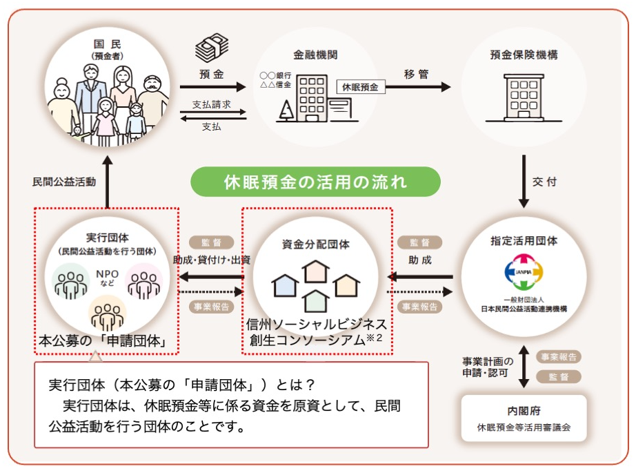

休眠預金事業公募のご案内
■ 休眠預金活用法とは

「休眠預金等活用法」に基づき、2009年1月1日以降の取引から10年以上、その後の取引のない預金等（休眠預金等）を、社会課題の解決や民間公益活動の促進のために活用する制度が2019年度から始まりました。JANPIAのページへ
「休眠預金等活用法」では、休眠預金等の資金を取り扱う団体を「指定活用団体」「資金分配団体」「実行団体」という3つの役割に分け、効果的に運用されています。「指定活用団体」が特定の社会的課題に焦点を当て、資金の活用先を選定します。一方で、「資金分配団体」は、休眠預金等の資金を集約し、それを「実行団体」に配分する仕組みを提供します。そして、「実行団体」は具体的なプロジェクトや活動を実行し、休眠預金等が社会に貢献する一翼を担います。
■ 公募する事業の概要
| 事業名 | ～～～～ |
|---|---|
| 助成事業項目 | ～～～～ |
| 事業実施地域 | 長野県内 |
| 事業実施期間 | 資金提供契約締結（2024年5月）～2025年2月末（約10ヶ月） |
| 助成金額 | 1団体あたり上限100万円 |
| 対象となる団体 |
新規のソーシャルビジネスのスタートとスケールアウトを想定して事業提案を行う、以下のいずれかを満たす県内事業者
|
【事業概要】 求める事業
以下の①と②の両方を満たす事業
① 県内各地域の社会課題を継続的に解決していく革新的なソーシャルビジネスの事業提案で、以下の要素を満たしているもの
- 協働・共創の上に始動する事業提案であること（個人での申請は対象になりません）
- この助成資金のみでないファンド資金、協業的なパートナー企業の資金、地域金融機関、市民債的な民間資金を誘引する仕組みを想定していること
- 社会課題解決への取り組みが明確であること
- 事業の継続・実装が前提となっていること
- 長野県ならではの地域の資源や技術、知恵などが活用されること
- SDGsへの貢献が組み込まれていること（環境、経済、社会の統合的実現に資するものであること）
② ソーシャルビジネス形成支援事業として、以下の視点で社会変革に取り組む事業提案
- 革新的事業で社会の諸課題の解決を図る社会的インパクトの創出と、それを実現するための持続可能なビジネスモデルの創出と推進を目指すもの
- 社会的インパクトと事業の持続性を確保するための事業性・社会性を両立させるビジネスモデル
■ 公募要項
| 公募要領 | 公募要項.pdf |
|---|---|
| 公募期間 | 2023年11月16日（木）～2024年2月29日（木）17時まで |
| 申請方法 |
上記公募期間中に必要書類をそろえ、メールによりデータ申請及び郵便にて（消印有効）申請書類を送付ください。 【メール】 social@mirai-kikin.or.jp【郵送先】 公益財団法人 長野県みらい基金 〒380-8570 長野県長野市南長野幅下692-2 長野県庁1階 TEl: 026-217-2220 |
| 申請前個別相談 | ～～～～ |
■ 申請書類
申請に必要な書類一覧
申請書類をダウンロードし、上述のメール先または郵送先に送付してください。
| 申請書類 | 提出形式 | 単独申請 | コンソーシアム申請 | 備考 | |
|---|---|---|---|---|---|
| 幹事団体 | 構成団体 | ||||
| 様式1_助成申請書 | ○ | ○ | ※ 登録印の押印が必要 | ||
| 様式2_事業計画書 | Excel | ○ | ○ | ||
| 様式3_資金計画書 | Excel | ○ | ○ | ||
| その他（計画の別添等） | 任意 | 任意 | 任意 | ||
| 様式4_自己資金に関する申請書 | Word | ○ | ○ | ※ 該当する団体のみ提出 | |
| 様式5_コンソーシアムに関する誓約書 | ○ | ※ コンソーシアム申請の場合のみ、幹事団体取りまとめのうえ提出 | |||
| 様式6_団体情報入力シート | Excel | ○ | ○ | ○ | |
| 様式7_役員名簿 | Excel | ○ | ○ | ○ | ※ 役員名簿はパスワード必須。パスワードは別途資金分配団体に提出 |
| 様式8_ガバナンス・コンプライアンス体制現況確認書 | Excel | ○ | ○ | ○ | |
| 定款 | ○ | ○ | ○ | ||
| 登記事項証明書（全部事項証明書） | ○ | ○ | ※ 発行日から3ヶ月以内の写し | ||
| 事業報告書 | ○ | ○ | ※過去3年分。設立から3年未満の団体は提出可能期間分のみ提出 | ||
| 貸借対照表 | ○ | ○ | ※過去3年分。設立から3年未満の団体は提出可能期間分のみ提出 | ||
| 損益計算書（活動計算書、正味財産増減計算書、収支計算書等） | ○ | ○ | ※過去3年分。設立から3年未満の団体は提出可能期間分のみ提出 | ||
| 監事及び会計監査人による監査報告書 | ○ | ○ | ※過去3年分。設立から3年未満の団体は提出可能期間分のみ提出 | ||